Chapter the First
Our Story
A doctor in a boat, a barony under the sand, and some very large cabbages across the bay.
i.A Doctor, a Boat and a Row of Yews
Some houses are found on maps. Binsness was found from a boat. One day a doctor was out on Findhorn Bay. He was a close friend and confidant of the future King George VI. From the water he saw an elegant avenue of Irish yews marching up a garden towards a grey stone house. He fell for it on the spot and vowed to make it his.
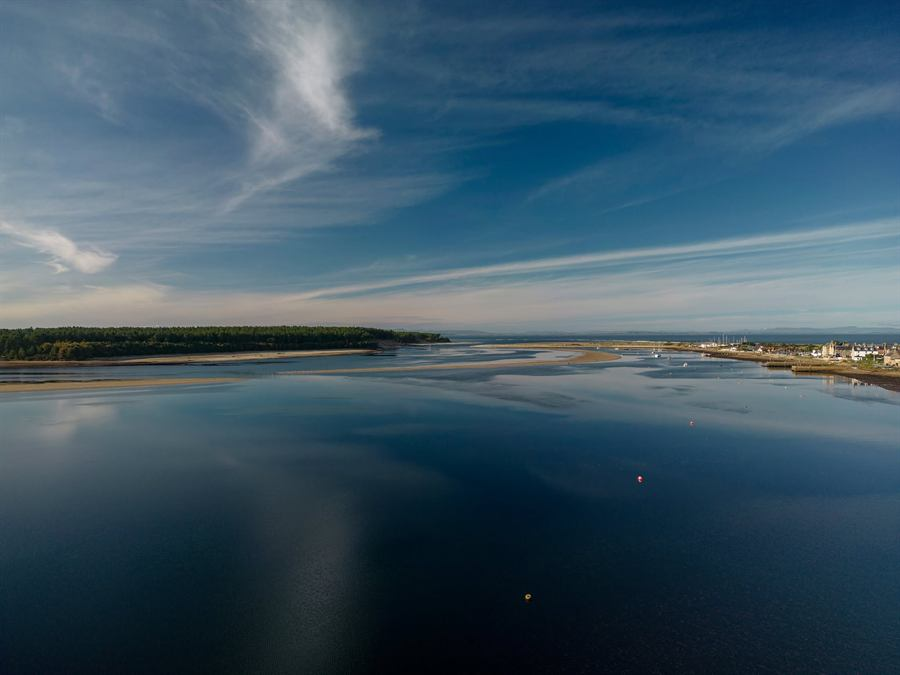
It took him many years. Today his grandson owns Binsness, and has known and loved it all his life. The house has lately been refurbished with taste, charm and a sensible respect for its ghosts. There is a new south-west roof terrace with a panorama across the garden and the bay. You may find yourself sitting there far longer than you meant to.
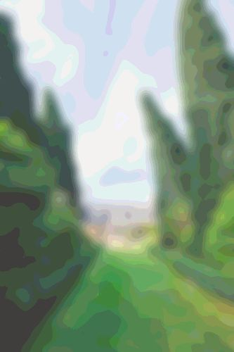
Binsness is almost an island. It stands alone on Findhorn Bay, with water on two sides and the 5,000 acres of the Culbin Forest at its back. The bay has a renowned micro-climate and the third-highest sunshine count in the British Isles. The nearest house is over a mile away. The pretty town of Forres, named in the first line of Macbeth, is only five miles off. From the garden gate you can walk the beach all the way to Nairn, sixteen miles away, and quite possibly meet nobody at all.
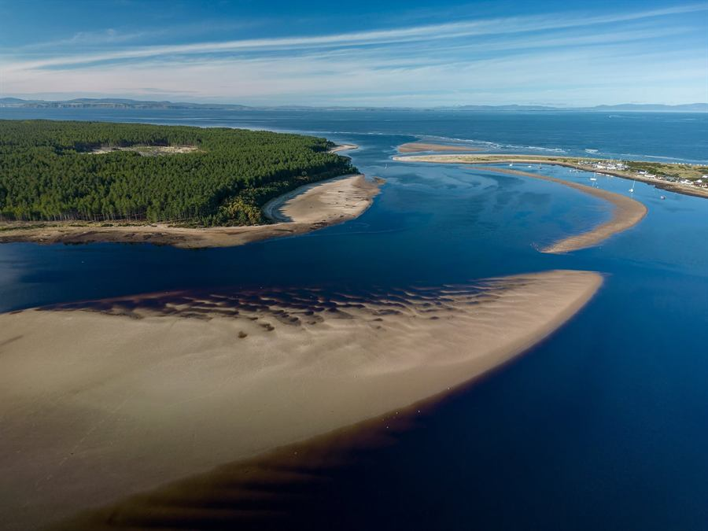
❦ ❦ ❦
ii.The Autumn the Sand Came
Before the forest, there was a barony. The Barony of Culbin was rich farmland, so fertile it was called the Girnel, the granary, of Moray. Its laird, Alexander Kinnaird, had a mansion house, a dovecot, an orchard and a lawn. Tenants farmed homesteads all around.
Then, in the autumn of 1694, the wind turned. Sand came out of the west, suddenly and with almost no warning. It poured in among the cottages and the laird's house alike. A man ploughing had to leave his plough mid-furrow. Reapers left a field of late barley standing. The sand choked the mouth of the River Findhorn, and the river flooded the fields and burst a new way to the sea. When people came back, there was not a trace of their houses.
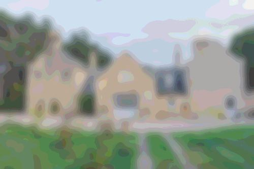
Keep scrolling and the sand keeps coming. (It did in 1694, too.)
The laird was ruined. Creditors pursued him, the estate went to auction, and Kinnaird left Culbin for good. The barony lay under the dunes. Every so often, the sand gave something back:
The voice in the chimney
In the 18th century a single chimney poked out of the dunes. A man climbed up and called down it, and a ghostly voice answered. He ran. A later storm took the chimney, and the house has not been seen since.The apple tree
A cherry tree was once seen in full blossom on a sand hill. An old man swore he watched an apple tree come up out of the sand, bud, blossom and bear fruit of a particularly delicious flavour.The card game
One legend says the laird had made a pact with the Devil to play cards, and that the two of them are playing still, inside the largest dune. (Tap to deal.)The coat of arms
Around 1920, sandstone blocks carved with part of the family's coat of arms were found. In the 1930s, a complete outline of foundation stones was briefly exposed, north-west of Kincorth.Rub away the sand and see what turns up.
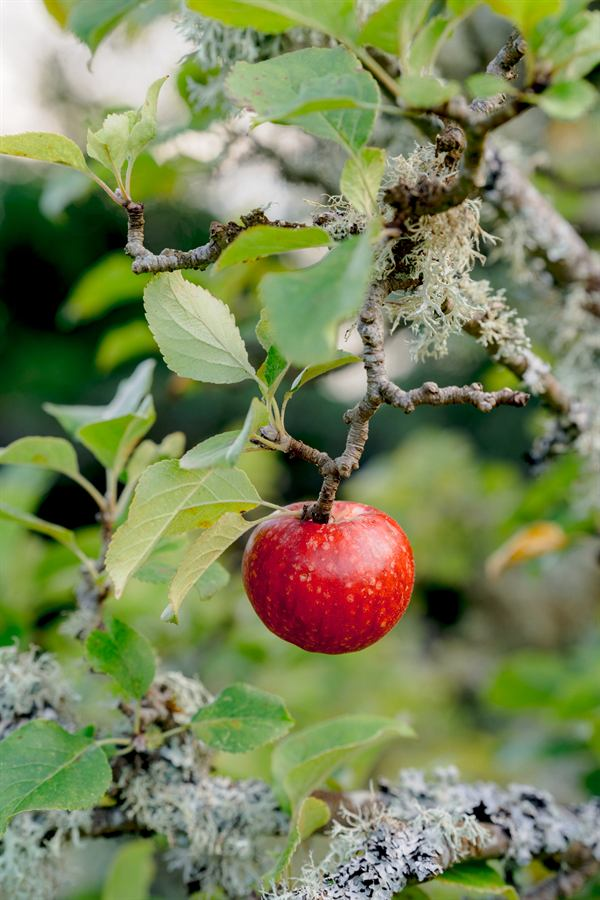
An apple from the Binsness garden. Delicious, as the old man said.
❦ ❦ ❦
iii.The Forest that Grew on a Desert
The sands were tamed in the end by planting trees. Today the Culbin Forest is a vast and varied forest on old dunes. It stretches from Nairn to Findhorn Bay, with gravel tracks for walking, cycling and riding, lichen beds, dragonfly ponds and saltmarsh where the land gives up and the bay begins. Binsness sits at its very eastern end.
Walk the Hill 99 Trail from the Wellhill car park (3½ miles, about two hours). It winds through pine-covered dunes, past the Gravelpit Ponds and over shingle ridges. Then it climbs Culbin's highest dune, all of 99 feet. A wooden tower at the top gives you a squirrel's-eye view over the treetops to the Moray Firth, and on a clear day to the hills of Sutherland. Trail maps are on the Forestry and Land Scotland website.
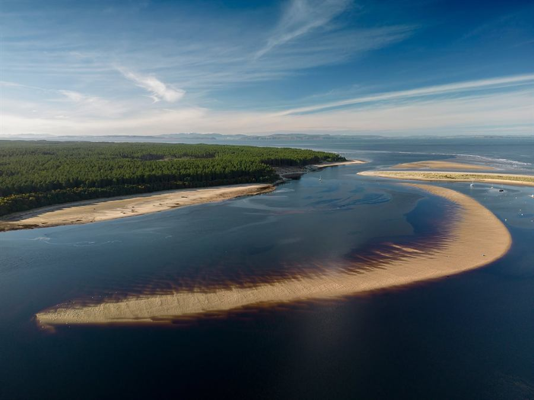
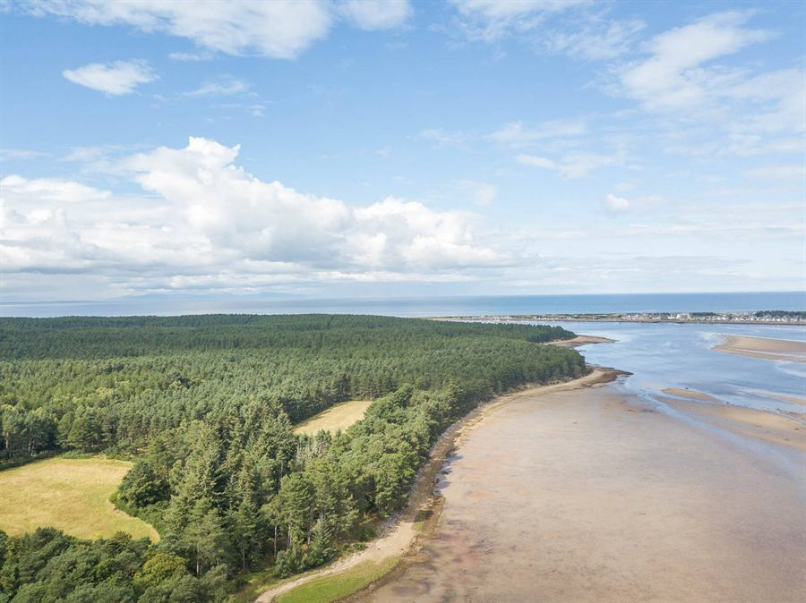
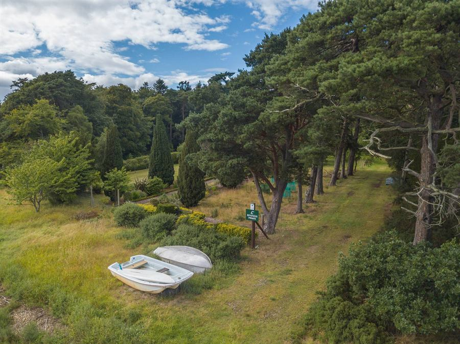
Many more tales of the drowned barony are in the Culbin Stories archive.
❦ ❦ ❦
iv. A short digressionAcross the Water: Findhorn
Look east from the end of the yew avenue and you are looking at Findhorn. It is a water-taxi ride away, or a paddleboard trip for the hardy, and a very long way round by road. The village has a harbour, two pubs and a bakery. A little inland is one of the odder corners of modern Britain.
In 1962 Peter and Eileen Caddy and their friend Dorothy Maclean parked a caravan near Findhorn and started a garden in the sand. The vegetables they grew became legendary for their size. Around them grew the Findhorn Foundation, a spiritual community and eco-village famous for its houses made from old whisky barrels.
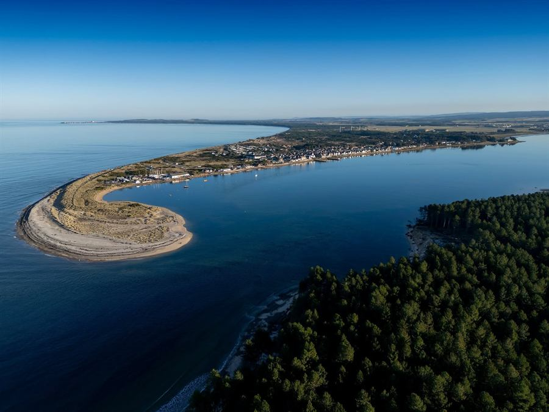
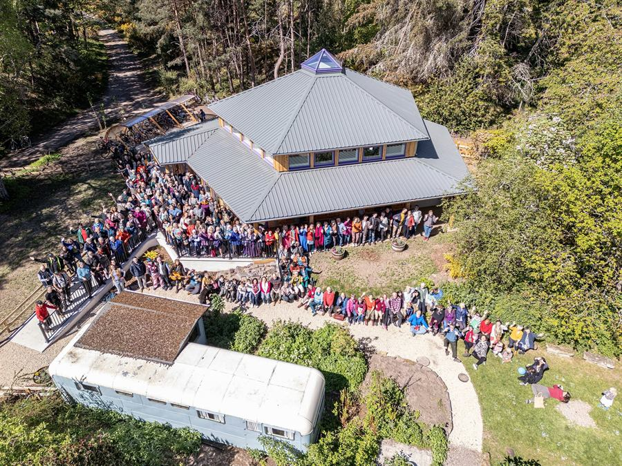
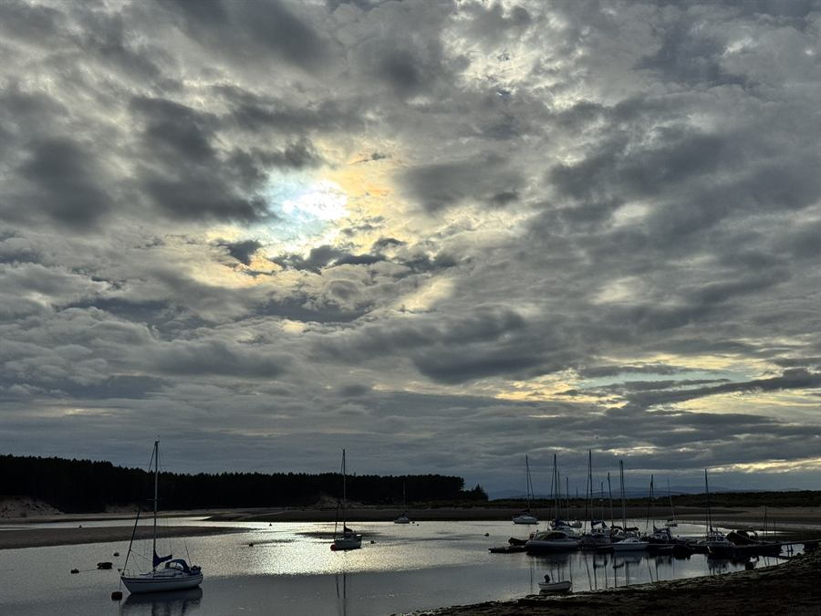